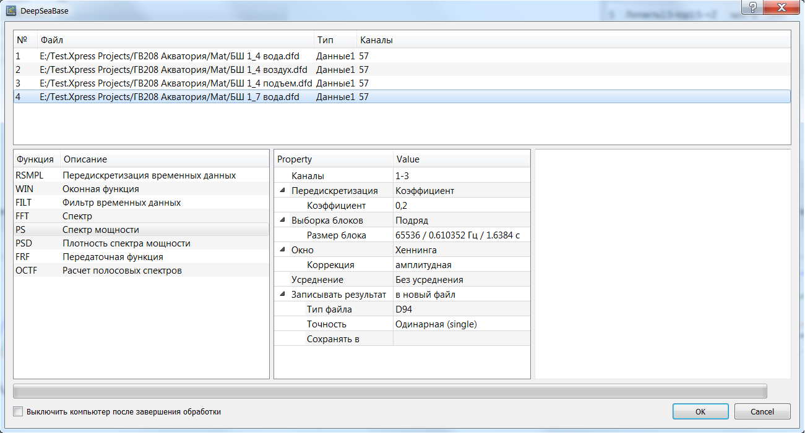

DeepSea Base
Расчеты на основе построенных графиков
Доступны следующие расчеты:
- Расчет среднего (энергетического и арифметического) построенных графиков.
- Расчет скользящего среднего построенных графиков.
- Сохранение вырезки временных данных.
- Сохранение вырезки спектра и проходной по спектрограмме.
При расчете среднего графиков есть возможность сохранить результат в отдельный файл или в исходный файл (если все каналы взяты из одного файла). Расчет среднего каналов, отличающихся шагом по оси X или начальным значением по оси X, невозможен.
Для расчета среднего добавьте графики нужных каналов и нажмите кнопку .
При расчете скользящего среднего можно выбрать величину окна усреднения (минимум 3 отсчета, максимум 15 отсчетов).
Для расчета скользящего среднего добавьте графики нужных каналов и нажмите кнопку .
Обработка временных реализаций
Чтобы открыть диалог расчета, выделите нужные записи с временными реализациями в таблице записей и нажмите кнопку . Откроется следующий далог:

Верхняя таблица перечисляет выбранные файлы. Левая таблица позволяет выбрать функцию обработки. Средняя таблица предназначена для настройки параметров расчета. В правое поле выводятся логи работы программы.
Замечания по параметрам расчетов
- Все функции позволяют выбрать обрабатываемые каналы. Слово
всеили пустая строка означают обработку всех каналов записи. Указать конкретные каналы можно в виде диапазона:1, 3, 5-10. - Для взаимных характеристик можно также указать опорный канал.
- Программа позволяет осуществлять передискретизацию данных, либо отдельной функцией RSMPL, либо как часть другой функции. Передискретизация доступна в трёх видах: заданием коэффициента (коэффициент 2 означает снижение частоты дискретизации в 2 раза), заданием частотного диапазона и заданием частоты дискретизации.
- Раздел Выборка блоков позволяет задать размер блока (буфера) и способ отбора блоков: подряд, с перекрытием, со смещением (отрицательное перекрытие), по триггеру.
- Окно: применение оконной функции позволяет минимизировать влияние просачивания спектральных составляющих. В программе реализовано множество оконных функций. Прямоугольное окно соответствует отсутствию оконной функции.
- Усреднение получаемых реализаций: Если выбрать
без усреднения, то в итоговый файл будут записываться реализации как есть, что позволяет рассчитывать и сохранять сонограммы.
Замечание: Файлы DFD не поддерживают сохранение сонограмм, поэтому при сохранении результатов расчета в DFD выбирайте другой вид усреднения. - Результаты расчета можно записывать в исходный файл (это позволяют форматы UFF и D94) или в новый файл. Кроме того, можно выбрать точность представления данных (для форматов DFD и D94) и целевую папку.
- Некоторые функции добавляют собственные параметры.
Обработка временных реализаций с помощью DeepSea
Существует возможность рассчитывать спектральные характеристики не собственными методами программы, а с помощью DeepSea. Количество доступных характеристик ограничено, кроме того, некоторые параметры (сохранение без усреднения, запись в исходный файл) недоступны. При запуске расчета будет запущен DeepSea. Следует дождаться завершения его работы и закрыть DeepSea. После этого созданные файлы будут автоматически добавлены в текущую вкладку.